1. 한 줄 결론
2. 비전공자 배경
2.1 Reader glossary
| Term | 쉬운 설명 | Paper 2 에서의 역할 |
|---|---|---|
| HLA allele | 면역세포가 항원을 보여주는 방식에 영향을 주는 유전형 표지. | PTC 가 Hashimoto-like immune context 와 만나는 genetic background 후보. |
| Carrier frequency | 개인 n명 중 해당 allele 을 가진 사람의 비율. | Korean PTC pool 의 metric. 개인 단위다. |
| Allele frequency | 2n개의 chromosome/allele copy 중 해당 allele copy 의 비율. | Korean baseline 문헌 대부분의 metric. allele 단위다. |
| Fisher exact test | 작은 count table 에서도 쓸 수 있는 2x2 exact test. | 이번 exploratory 통계에서 PTC carrier count 와 baseline allele count 를 비교하는 계산층. |
| Forest plot | 여러 allele 의 OR 와 CI 를 한눈에 보여주는 그림. | 효과 방향과 불확실성을 시각화한다. clean case-control proof 는 아니다. |
| Paper 4 boundary | GD/Graves HLA evidence 는 별도 paper backlog 로 유지. | Chu 2018 GD signal 을 Paper 2 comparator 로 되살리지 않기 위한 방화벽. |
3. 전체 논리 흐름
Paper 2 HLA 의 핵심은 "GD 에서 알려진 HLA 를 가져와 PTC 에 붙이는 것" 이 아니다. 먼저 Korean PTC pool 에서 6 개 target allele carrier frequency 가 있는지 확인하고, 그 다음 한국인 healthy/control baseline 에서 같은 allele 의 published allele frequency 가 있는지 확인한다. 마지막으로 metric mismatch 를 숨기지 않은 exploratory 통계로만 읽는다.
3.1 분석 사고 스토리
3.2 Evidence ladder
| Level | Evidence | Reader should conclude | Do not conclude |
|---|---|---|---|
| 1 | Korean PTC carrier table n=874 | PTC-side target allele values exist. | They are allele frequencies. |
| 2 | In 2015 Korean healthy baseline n=613 | A/B/C/DRB1/DQB1 have direct Korean baseline values. | It covers DPB1. |
| 3 | AFND South Korea + Jung 2023 DPB1 | DPB1*05:01 has a usable primary/cross-check path. | Jung full table has been fully archived. |
| 4 | Exploratory OR/Fisher/forest | Direction/scale can be inspected. | Clean carrier-vs-carrier case-control inference is proven. |
| 5 | GD/Paper 4 evidence | Backlog registry only. | Paper 2 comparator or meta-analysis input. |
4. Paper 2 vs Paper 4 boundary
| Track | Allowed in this page | Blocked |
|---|---|---|
| Paper 2 | Korean PTC, HT/AITD context, Korean healthy/control baseline, HLA-II mediated dedifferentiation | OR/Fisher/forest before Yu approval |
| Paper 4 | Only mentioned as boundary/backlog | GD/Graves evidence as Paper 2 comparator, Chu 2018 reactivation |
| Paper 3 | Frozen label only | ICI, HLA LOH, neoantigen |
5. 6-allele source table summary
| Allele | PTC metric | PTC value | Primary baseline | Baseline metric/value | Status |
|---|---|---|---|---|---|
| A*02:07 | carrier frequency | 0.0812 | In 2015 | allele frequency 3.51% | needs Yu approval |
| B*46:01 | carrier frequency | 0.103 | In 2015 | allele frequency 5.06% | needs Yu approval |
| C*01:02 | carrier frequency | 0.2414 | In 2015 | allele frequency 17.81% | needs Yu approval |
| DPB1*05:01 | carrier frequency | 0.532 | AFND South Korea current v2 | allele frequency 0.3667 | needs Yu approval |
| DQB1*02:01 | carrier frequency | 0.0 | In 2015 | allele frequency 2.12% | needs Yu approval |
| DRB1*07:01 | carrier frequency | 0.1144 | In 2015 | allele frequency 6.93% | needs Yu approval |
Source TSV: project/results/p2_pillar1_forest_v2/paper2_6allele_forest_source_table.tsv
6. Exploratory OR/Fisher statistics
| Allele | PTC carriers/n | Baseline alleles/2n | Exploratory OR | 95% CI | Fisher p | Baseline source |
|---|---|---|---|---|---|---|
| A*02:07 | 71/874 | 43/1226 | 2.43 | 1.65-3.59 | 5.58e-06 | In 2015 |
| B*46:01 | 90/874 | 62/1226 | 2.16 | 1.54-3.02 | 7.38e-06 | In 2015 |
| C*01:02 | 211/874 | 218/1226 | 1.47 | 1.19-1.82 | 4.35e-04 | In 2015 |
| DPB1*05:01 | 465/874 | 499/1360 | 1.96 | 1.65-2.33 | 1.65e-14 | AFND South Korea |
| DQB1*02:01 | 0/874 | 26/1226 | 0.026 | 0.0016-0.426 | 8.22e-07 | In 2015 |
| DRB1*07:01 | 100/874 | 85/1226 | 1.73 | 1.28-2.35 | 4.18e-04 | In 2015 |
6.1 What this means
Exploratory statistics show that five alleles are higher in the Korean PTC carrier layer than the Korean baseline allele-frequency layer, while DQB1*02:01 is depleted in the PTC carrier layer. The strongest visual signal is DPB1*05:01 because it has both a large PTC carrier fraction and a Korean DPB1 baseline path.
6.2 What this does not mean
This does not prove a clean population-genetic case-control association, because the two rows of the 2x2 table are measured in different units. It also does not import GD/Graves biology into Paper 2, and it does not authorize a Paper 4 meta-analysis.
6.3 Files created
project/results/p2_pillar1_forest_v2/paper2_6allele_or_fisher_primary.tsv
project/results/p2_pillar1_forest_v2/paper2_6allele_exploratory_or_fisher_forest.png
project/reports/2026_05_06_paper2_6allele_exploratory_stats_report.md
7. What changed in this package
8. Primary and cross-check sources
| Role | Sources | Meaning |
|---|---|---|
| Primary candidate | In 2015 for A/B/C/DRB1/DQB1 | Direct Korean healthy SBT allele-frequency table, n=613. |
| DPB1 primary | Current v2 AFND South Korea | Existing v2 DPB1 baseline remains primary for now. |
| DPB1 cross-check | Jung 2023 | 11-locus Korean NGS; abstract-level DPB1*05:01:01 = 35.1%, collapsed to 4-digit. |
| A/B/C/DRB1 cross-check | Choe 2021, Chung 2010 | Useful for source consistency; not full 6-allele because DQB1/DPB1 are absent. |
| Sensitivity | Harbin Korean fallback for DRB1*07:01 | Should not remain primary if direct Korean DRB1*07:01 values are used. |
9. Figures (F1 ~ F15)
Click any figure to enlarge. F1–F12 define boundary/source/readiness. F13–F15 show the newly executed exploratory statistics with the metric caveat embedded.
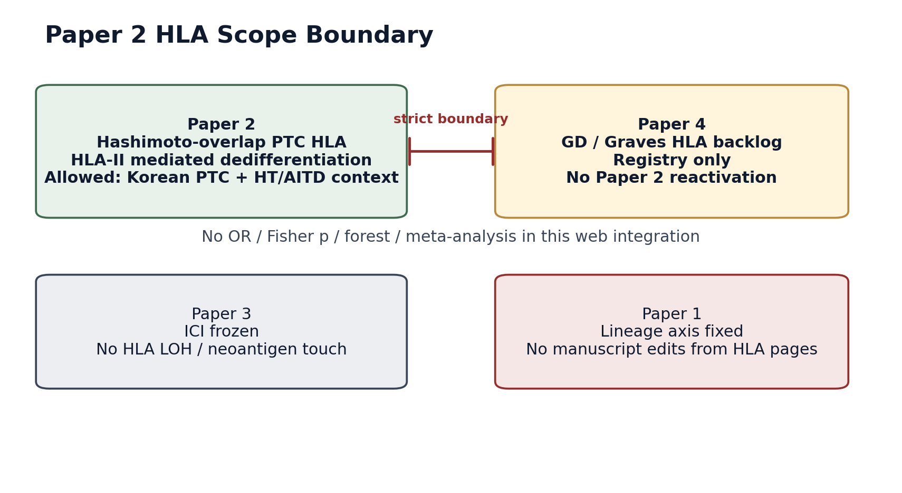
F1. What this means: Paper 2 is HT-overlap PTC only. What it does not mean: GD/Graves evidence is reintroduced into Paper 2.
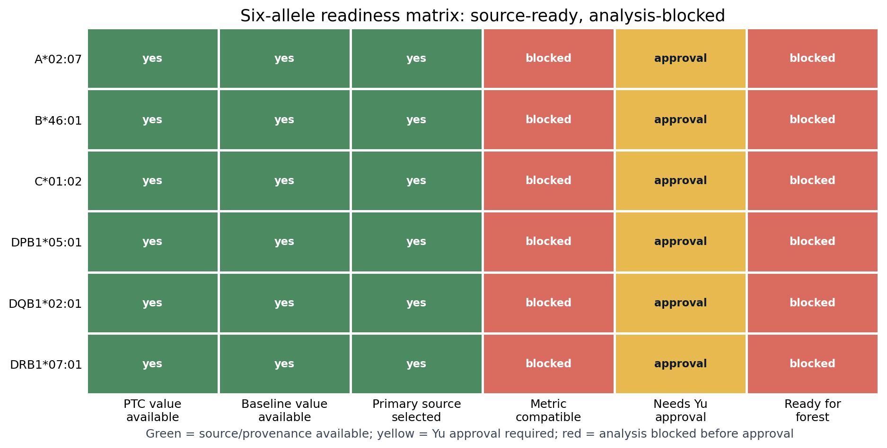
F2. What this means: source values exist for the six alleles. What it does not mean: the forest is ready; every row still needs Yu approval.
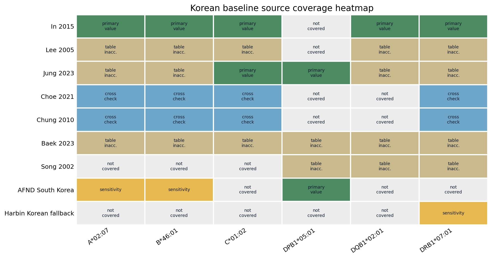
F3. What this means: In 2015 covers five alleles and Jung/AFND cover DPB1. What it does not mean: inaccessible tables were inferred.
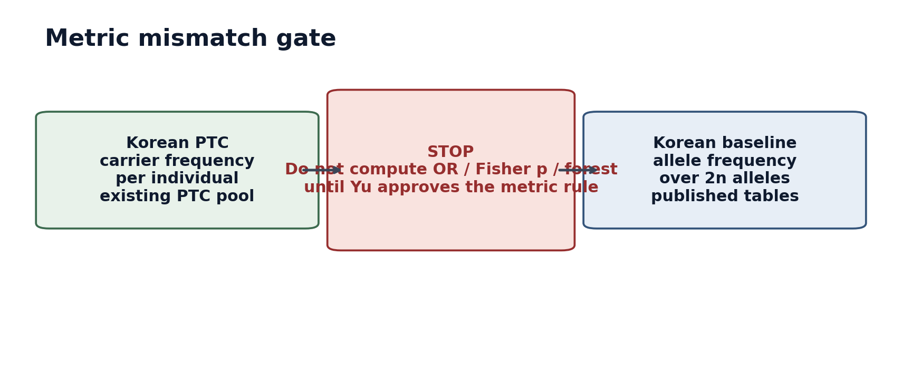
F4. What this means: PTC carrier frequency and baseline allele frequency are different measurement types. What it does not mean: either side was converted.
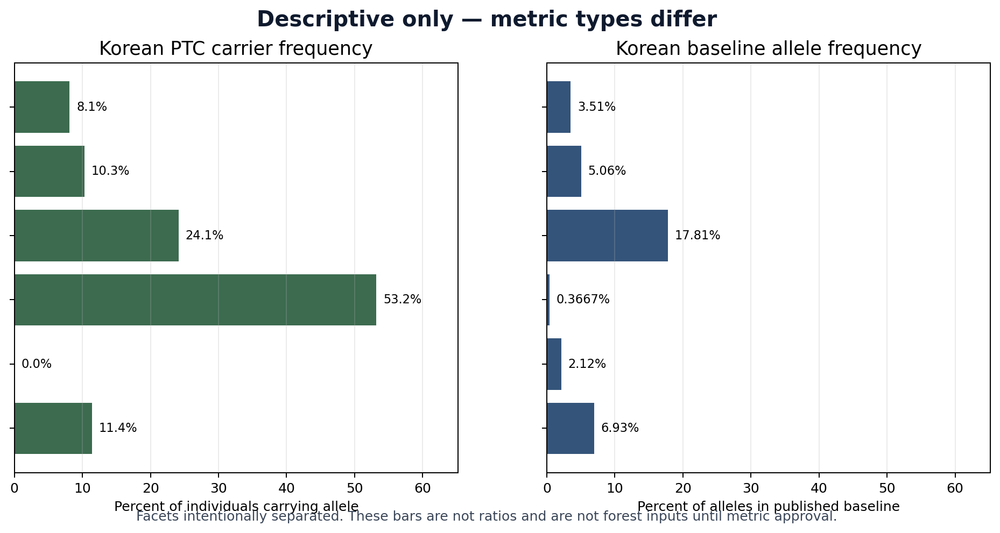
F5. What this means: values are shown descriptively in separate facets. What it does not mean: bars are ratios, p-values, or forest inputs.
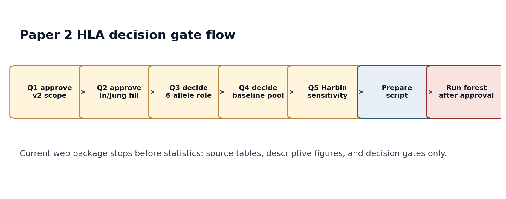
F6. What this means: analysis must pass Q1-Q5. What it does not mean: the script or forest was run.
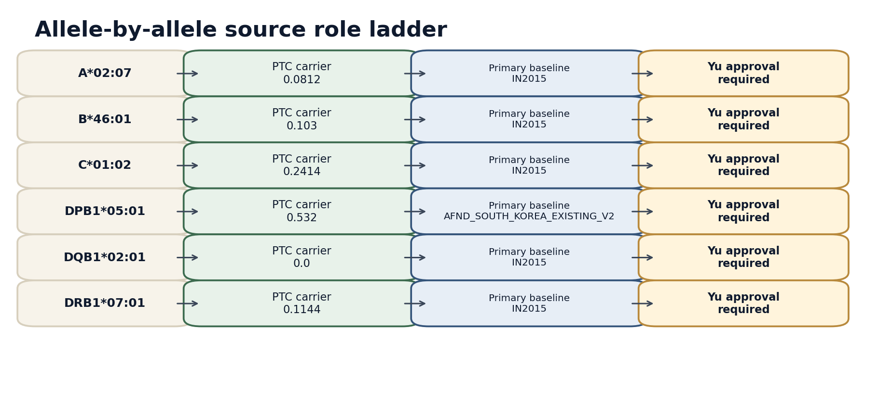
F7. What this means: each allele now has a PTC value, primary baseline candidate, and approval gate. What it does not mean: the table has become an executable analysis.
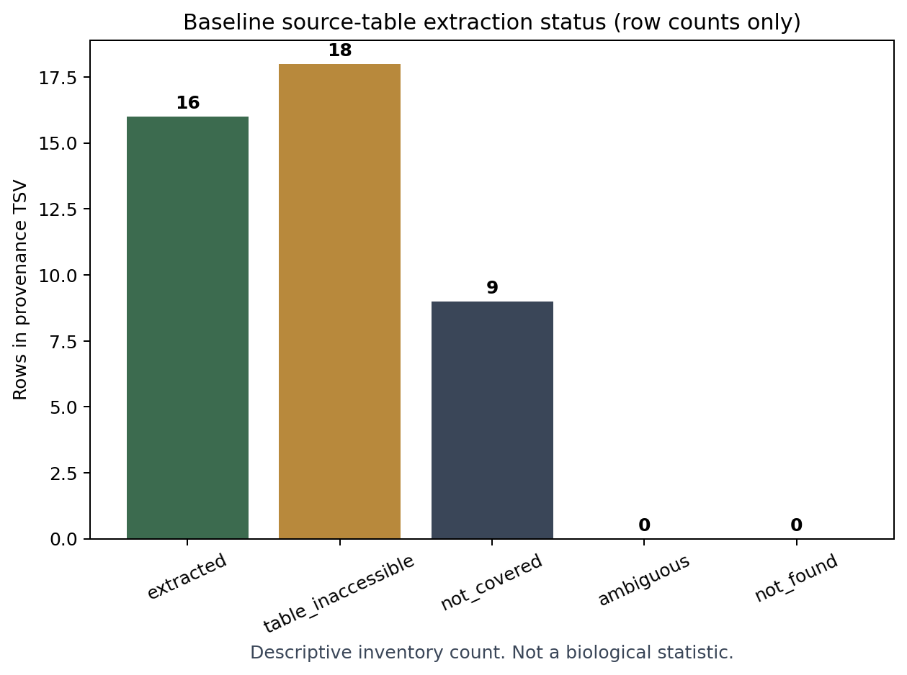
F8. What this means: this is a row-count inventory of extraction statuses. What it does not mean: this is a biological statistic.
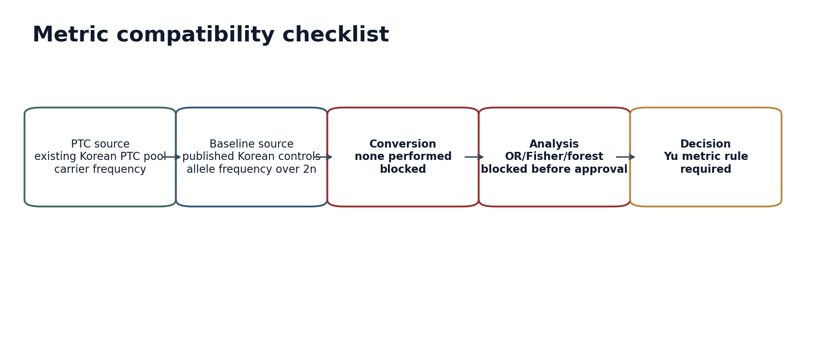
F9. What this means: it shows the exact approval sequence for metric compatibility. What it does not mean: conversion has happened.
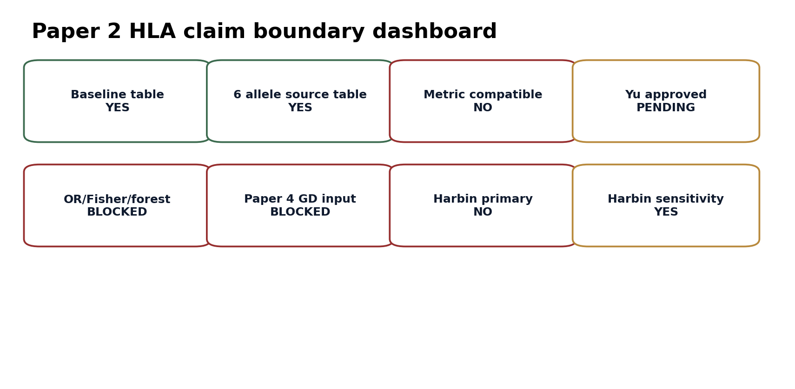
F10. What this means: claim boundaries are now explicit. What it does not mean: blocked claims are allowed.
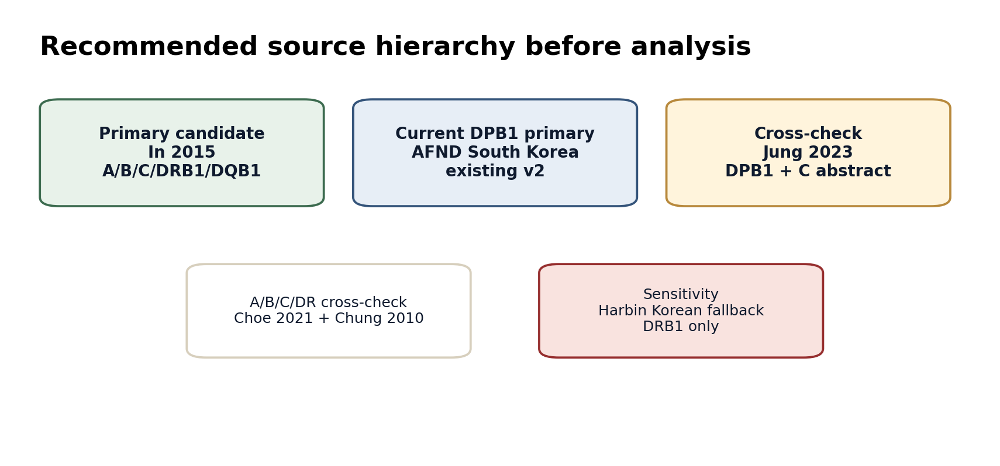
F11. What this means: source hierarchy is ready for advisor review. What it does not mean: hierarchy has Yu approval.
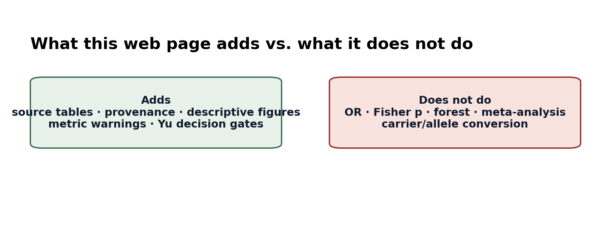
F12. What this means: this web page is deliberately explanatory. What it does not mean: hidden statistics were run.
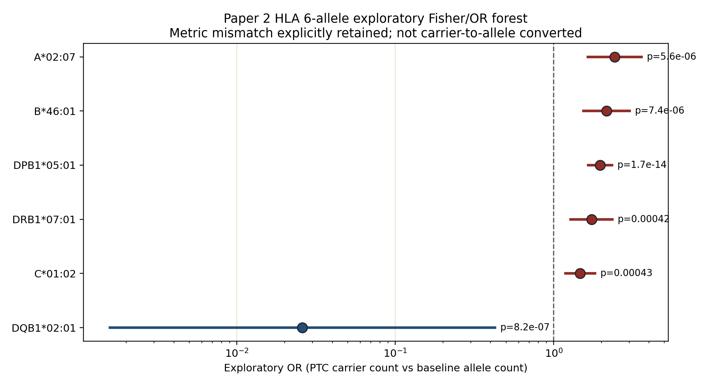
F13. What this means: after approval, six alleles were run through exploratory OR/Fisher and shown as a forest. What it does not mean: carrier and allele frequencies were made equivalent.
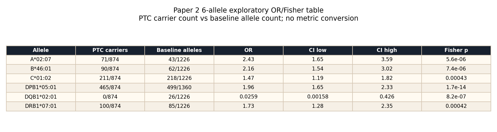
F14. What this means: exact count basis and Fisher p are visible. What it does not mean: count reconstruction removes the metric caveat.
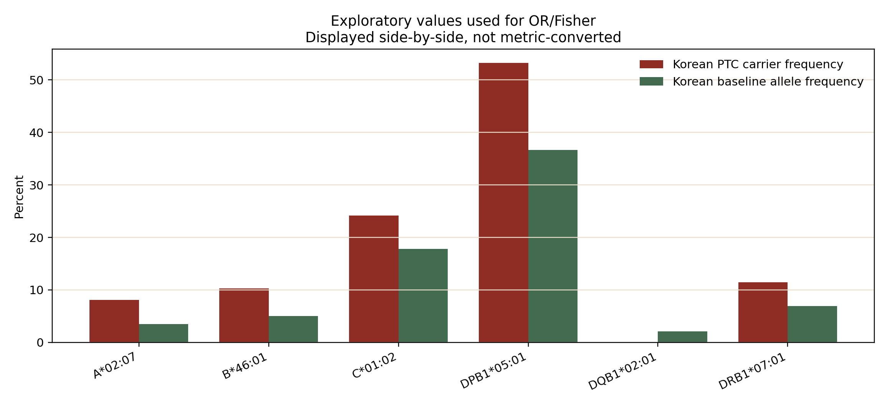
F15. What this means: the two input metric types are displayed side-by-side. What it does not mean: direct percentage bars are cleanly interchangeable.
10. Expanded source / provenance tables
10.1 Six-allele readiness table
| Allele | PTC source | PTC metric | Baseline source | Baseline metric | Approval state |
|---|---|---|---|---|---|
| A*02:07 | Korean PTC Combined n=874 | carrier frequency | In 2015 Table 1 | allele frequency | needs Yu approval |
| B*46:01 | Korean PTC Combined n=874 | carrier frequency | In 2015 Table 1 | allele frequency | needs Yu approval |
| C*01:02 | Korean PTC Combined n=874 | carrier frequency | In 2015 Table 1 | allele frequency | needs Yu approval |
| DPB1*05:01 | Korean PTC Combined n=874 | carrier frequency | AFND South Korea current v2 | allele frequency | needs Yu approval |
| DQB1*02:01 | Korean PTC Combined n=874 | carrier frequency | In 2015 Table 1 | allele frequency | needs Yu approval |
| DRB1*07:01 | Korean PTC Combined n=874 | carrier frequency | In 2015 Table 1 | allele frequency | needs Yu approval |
10.2 Source role table
| Source | Role | Coverage | Current status |
|---|---|---|---|
| In 2015 | primary candidate | A/B/C/DRB1/DQB1 | extracted |
| AFND South Korea current v2 | DPB1 primary | DPB1*05:01 | existing v2 source |
| Jung 2023 | cross-check | DPB1*05:01 and C*01:02 visible in abstract | needs full table for broader use |
| Choe 2021 | cross-check | A/B/C/DRB1 | 8-digit values collapsed with note |
| Chung 2010 | cross-check | A/B/C/DRB1 | indexed value extraction; archive full table before numeric reuse |
| Lee 2005 / Baek 2023 / Song 2002 | defer or sensitivity | varies | table inaccessible in this pass |
11. Claim boundary table
| Claim | Status |
|---|---|
| Korean baseline source table prepared | YES |
| 6-allele exploratory forest | EXECUTED — exploratory metric mismatch |
| C*01:02 fill | source available |
| DQB1*02:01 fill | source available |
| DPB1*05:01 | existing AFND + Jung cross-check |
| Harbin fallback | sensitivity only |
| OR/Fisher/forest | EXECUTED after approval; caveated |
| Paper 4 GD | BLOCKED in Paper 2 |
12. Safe wording vs unsafe wording
| Topic | Safe wording | Unsafe wording | Reason |
|---|---|---|---|
| HLA signal | Korean PTC shows exploratory enrichment/depletion patterns against Korean baseline sources. | HLA causally drives PTC. | The current layer is observational and metric-mismatched. |
| DPB1*05:01 | DPB1*05:01 is the clearest candidate requiring clean metric confirmation. | DPB1*05:01 is definitively associated with PTC. | Baseline source and carrier-vs-allele distinction still matter. |
| DQB1*02:01 | DQB1*02:01 is depleted in the PTC carrier table under this exploratory rule. | DQB1*02:01 is protective in Korean PTC. | Zero PTC carrier count needs careful typing/provenance review. |
| GD/Graves | GD HLA evidence belongs to Paper 4 backlog. | Chu 2018 GD validates Paper 2 HLA. | That would break the Paper 2/Paper 4 boundary. |
13. Yu decision checklist · 한계 · 다음 행동
- [x] Q1 approve v2 scope and source table use for exploratory execution.
- [x] Q2 approve In/Jung/AFND baseline fill strategy for exploratory execution.
- [ ] Q3 decide whether 6-allele panel is primary or supplementary in final paper.
- [ ] Q4 decide whether metric-mismatched OR/Fisher can appear in main/supplement or advisor-only.
- [x] Q5 approve Harbin fallback as sensitivity only, not primary.
Next action: decide final placement: main figure, supplement, or advisor-only. Paper 4 remains frozen as registry unless separate approval is given.